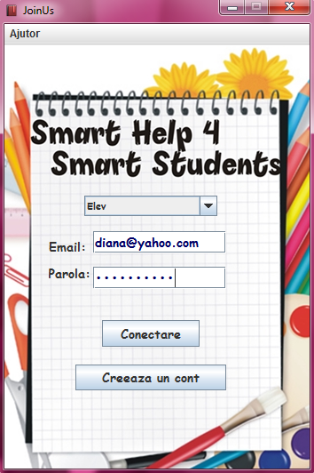
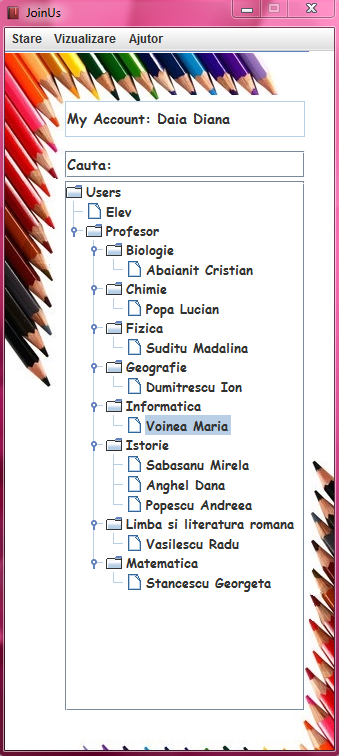
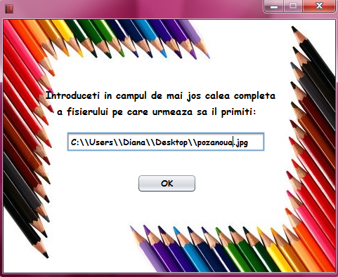

Programul este conceput sa va ajute in abordarea dificultatilor intampinate la scoala, precum si in facilitarea comunicarii elev-profesor.
Pentru a va familiariza cu structura aplicatiei accesati link-urile de mai jos:
In fereastra initiala apasati tasta "Creeaza un cont". Vi se va deschide apoi o fereastra cu mai multe campuri pe care trebuie sa le completati cu datele personale conform indicatiilor cerute. Dupa ce ati terminat de completat toate campurile, apasati tasta "Creeaza cont". Nu va faceti probleme daca v-ati dat seama ca ati gresit unele informatii, datele pot fi schimbate.
In campurile "Email" si "Parola" introduceti email-ul si parola pe care le-ati dat la crearea contului si alegeti categoria de utilizator de care apartineti. Apoi, apasati tasta "Conectare". Prin apasarea acesteia, veti deveni activ in cadrul aplicatiei si vi se va afisa o noua fereastra cu urmatoarele campuri : in "Users" puteti gasi persoanele conectate in acel moment, in functie de categoria din care cel logat face parte. Daca cel logat este elev, ii vor fi afisati toti profesorii conectati in acel moment clasificati in functie de materiile pe care le predau, daca cel logat este profesor, ii vor fi afisati toti elevii conectati in acel moment. Pentru comunicarea cu una dintre persoanele logate este suficient un click pe numele persoanei respective prin care se deschide o fereastra pentru startul conversatiei. De asemenea, daca doriti sa vorbiti cu un anume utilizator, ii puteti cauta numele in campul "Cauta". Daca ati introdus corect numele si acesta este activ se va deschide o ferestra pentru conversatie. In campul "Contul meu" veti vedea afisat numele cu care sunteti inregistrat in baza noastra de date.
 Prin deschiderea acestui meniu vi se vor afisa trei optiuni: "Delogare" (Ctrl - D) prin care va deconectati, iar statusul dumneavoastra va deveni inactiv, "Iesire" (Ctrl + Shift - D) prin care va deconectati, statusul dumneavoastra devine inactiv si parasiti aplicatia.

Prin accesarea acestui meniu va puteti vizualiza contul (Alt-V) si activitatea (Shift-A) din cadrul aplicatiei noastre.

Pentru editarea contului este necesara accesarea meniului VIZUALIZARE. In coltul din dreapta-jos al fereastrei in care va apar datele contului, aveti o casuta cu optiunea "Editeaza". Dupa ce bifati casuta, va puteti face modificarile dorite, apasati apoi tasta "Actualizeaza cont" si toate datele vechi vor fi inlocuite cu cele noi.
Pentru a vizualiza activitatea dumneavoastra este necesara accesarea meniului VIZUALIZARE. Printr-un click pe Activitate, se va deschide o fereastra care in functie de categoria din care face parte cel logat arata astfel: daca cel logat este elev, arata numarul de conversatii pe care le-a avut cu toti profesorii, precum si detalii despre fiecare conversatie. Daca cel logat este profesor, va putea sa vada numarul conversatiilor avute, durata totala a acestora si rating-ul primit din partea elevilor.
In fereastra creata pentru conversatie in campul de jos inserati textul pe care doriti sa-l transmiteti, apoi apasati tasta Trimite printr-un click sau tasta Enter de pe tastatura. Intreaga conversatie va va fi afisata in campul de sus.
Puteti trimite fisiere prin apasarea icon-ului corespunzator din coltul din dreapta-jos din fereastra conversatiei. Vi se va afisa o fereastra in care trebuie sa introduceti calea completa a fisierului pe care vreti sa-l trimiteti.
In momentul in care persoana cu care vorbiti doreste sa va trimita un fisier va va aparea o fereastra in care trebuie sa inserati calea completa a fisierului pe care il primiti: alegeti directorul din calculatorul dumneavoastra in care doriti sa-l plasati, precum si numele cu care vreti sa-l salvati.
